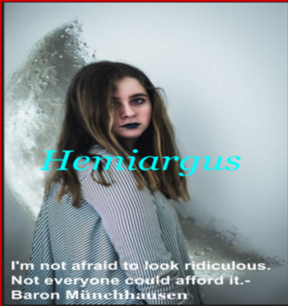

Challenge:Design a Band
Band Design Information
Design thinking is when we have to design and use our own creativity
to design anything our minds can make. We use different mindsets to
figure out
how we are going to design our band cover. What we did to create our band cover was we had to look for what picture we wanted for our cover.Once we did that we had to randomly pick our
band name and a quote. Once we got that we made our band cover with the picture,random name, and the random quote. We put that all together and got our band cover. Then what we did was make a
bibliography of our band and what their like.
Album Cover
Bibliography Of Hemiargus
The band was made by two sisters: Elizabeth and Leslie.
They were both close to each other and wanted to pursuit a music career together.They were gonna call their band E and L.One day
leslie wanted
to get a nice outfit for their video they were going to make. When Elizabeth was Setting up she had got a call that her sister got in a car crash.Elizabeth was
devastated. The day after her sister had passed away, Elizabeth was so sad that day she wasnt going to play music ever again without her sister. Then something changed her mind,she seen a butterfly always following her since leslie had passed.Then she remembered that when they were younger her sister said when she passes away she wanted to become a butterfly. The butterfly that Elizabeth
had seen was a hemiagrus, her sisters favorite butterfly. Then she went back into the music buisness.She got her three closes friends who like to play some instuments. For the drum her first friend marissa joined her,then vanessa played the gutair,and emma played the bass. They all performed in their home land, North Carolina.
Everyone loved them,then they made an album with their band name and elizabeth on the front. They were the biggest band in the U.S.